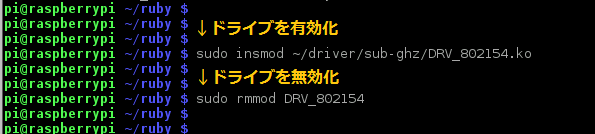

ここでは、PCとRaspberry Piをシリアル通信で接続してPCのコンソールに出力し、Wi-Fiを設定するまでについて説明します。
Raspberry Piはモニターやキーボードを接続してコンピューターとして使用できるだけでなく、Gatewayとしても使用できます。Gatewayとして使用するのであればモニターやキーボードは不要です。
シリアルケーブルを接続してPCからRaspberry Piを制御する方法と、その方法を用いてWi-Fiを設定する方法を紹介します。
Raspberry Pi のイメージファイルをMicroSDカードへ書き込み、Raspberry Piに接続しておきます。
イメージファイルの書き込み方法は、「Lazurite Pi Gatewayの立上げ方法/使用方法」の「Raspberry Pi用イメージファイルのダウンロード」、「win32DiskImagerのダウンロードとインストール」、「MicroSDカードへのイメージファイルの書き込み」を参照してください。
MicroSDの接続方法は「Lazurite Pi Gatewayの立ち上げ方法」の「MicroSDの差し込み」を参照してください。
Raspberry Piにシリアル接続するためのソフトであるTera Termをダウンロード、インストールします。
１．次のページを開きます。
２．「ダウンロードファイル一覧」をクリックします。
3．一覧から最新のteraterm-x.xx.exeをクリックし、 ダウンロードします。
ここではteraterm-4.89.exeを選択してインストールすることにします。
4．ダウンロードしたteraterm-x.xx.exeをクリックし、 画面の通りに進めてインストールします。
次の画面が表示されれば、Tera Termをインストールは完了です。
事前準備3.Tera Termの準備
Tera Termを使用してRaspberry Piにシリアル接続する準備をします。
1．WindowsのプログラムメニューからTera Termを選択します。
2．接続方法を設定します。「シリアル」をチェックし、「OK」をクリックします。
3．通信速度を設定します。「設定」メニューから「シリアルポート」を選択します。
4．ボー・レートから「115200」を選択し、「OK」をクリックします。
これでTera Termを使用してRaspberry Piにシリアル接続する準備ができました。

Raspberry Pi側 <—–> FTDI USBシリアル変換アダプタ
6pin GND GND
8pin TX(送信) RX(受信)
10pin RX(受信) TX(送信)


3.FTDI USBシリアル変換アダプタとPCをマイクロUSBケーブルで接続します。
★画像を入れる★
4.Raspberry PiにUSB電源を挿入します。
★画像を入れる★
Raspberry Piが起動し、Tera Termの画面に起動画面が表示されます。
次のように入力します。
Raspberry Pi login: pi⏎
Password: raspberry⏎ (パスワードは初期設定のままです。ここで入力しても文字は表示されません。）
SDカードにイメージファイルを書き込んでから初めてRaspberry Piを起動したときは、Raspi-configコマンドを実行してディスクイメージを拡張してください。
再起動され、ディスク容量が拡張されます。
ｘｘｘｘｘｘｘｘｘ
ここでは、Lazurite Sub-GHzからデータを送信し、Lazurite Pi
Gatewayで受信する方法について説明します。
Lazurite Sub-GHzからデータを送信する手順については、「Lazurite Pi Gatewayの立上げ方法/使用方法」の「Lazurite Sub-GHzの準備」を参照してください。
sudo insmod ~/driver/sub-ghz/DRV_802154.ko⏎
cd ruby⏎
sudo ./SerialMonitor.rb⏎
次のようなメッセージを受信したら成功です。「CTRL」ボタンを押しながら「C」押すと、 アプリケーションを終了できます。

※sudo
は管理者権限でプログラムを実行するためにつけるコマンドです。
ドライバからデータを読み込むために管理者権限が必要になります。
※受信機の青色ＬＥＤが点灯していると受信はできている状態です。
受信機のオレンジＬＥＤが点灯していると正常にデータを受け取りＡＣＫ信号を
返している状態となります。
sudo rmmod DRV_802154⏎
Lazurite Sub-GHzから信号を出した状態のままアプリケーションを終了して放置すると、
メモリーに受信データが保存され続けてしまい、システムが不安定になる可能性があります。
そのため、使用しない場合はドライバーを一度、uninstallしてください。
「CTRL」ボタンを押しながら「C」押すと、 アプリケーションを終了できます。
次のコマンドでドライバを無効にしたり有効にしたりできます。
| ドライバ無効化する方法 | sudo rmmod DRV_802154⏎ |
| ドライバを有効化する方法 | sudo insmod ~/driver/sub-ghz/DRV_802154.ko |

既にお手持ちのRaspberry Piでシリアルコンソールを有効にするのは以下の手順で行えます。
1) pi@raspberrypi:~$ sudo raspi-config
2) 「8 Advanced Options」を選択
3) 「A8 Serial」を選択
4) 「 Would you like a login shell to be accessible over
serial?」と聞かれるので「はい」「Yes」を選択